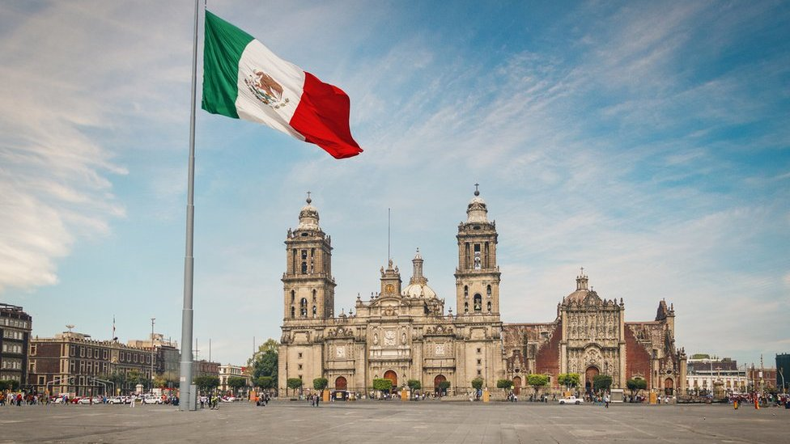
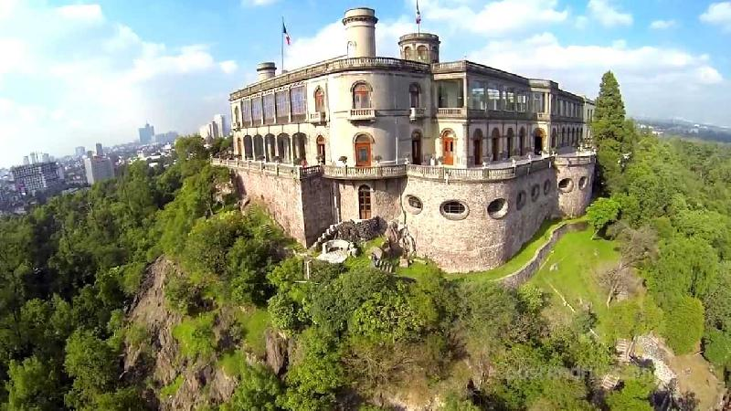
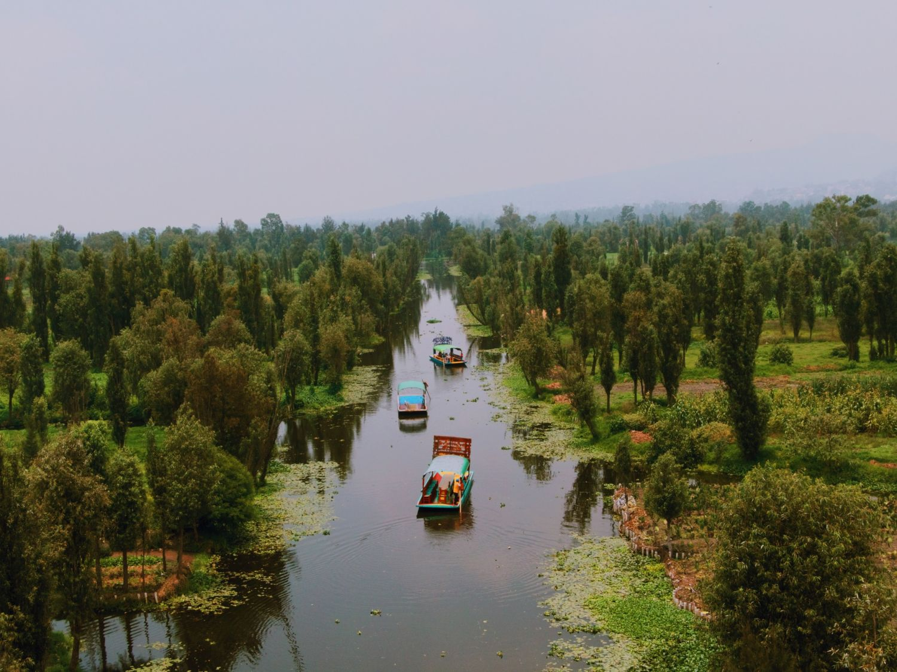

Si es tu primera vez aquí, estos son los tres lugares que debes tachar de tu lista de inmediato:
El Zócalo y el Centro Histórico: El corazón político y cultural del país, rodeado por la imponente Catedral Metropolitana y el Palacio Nacional.

El Castillo de Chapultepec: El único castillo real en todo el continente americano, ubicado en la cima de un bosque hermoso.

Los Canales de Xochimilco: Un viaje al pasado a bordo de una colorida trajinera tradicional, disfrutando de música y comida local sobre el agua.
